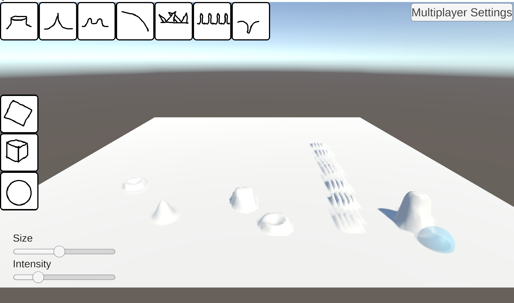
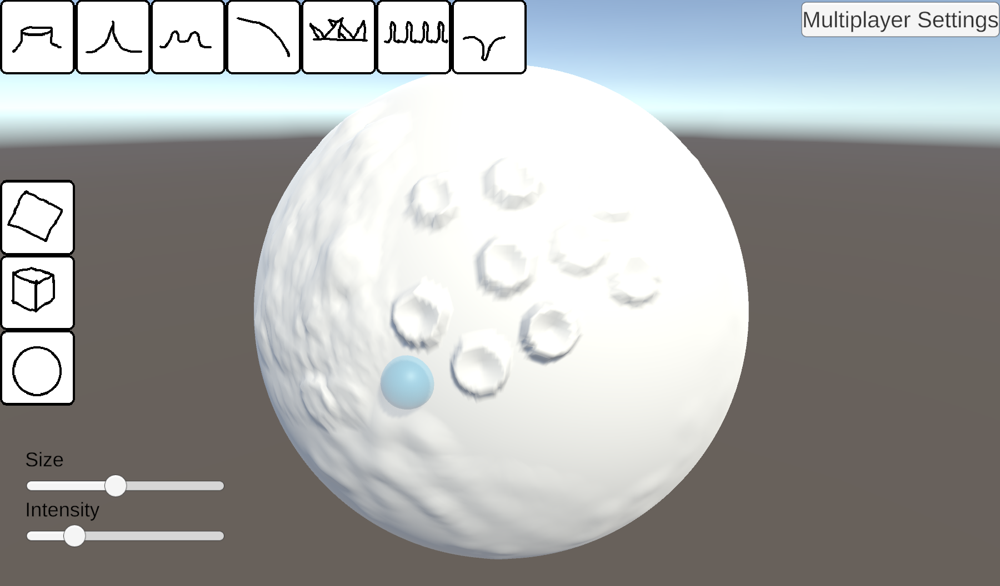
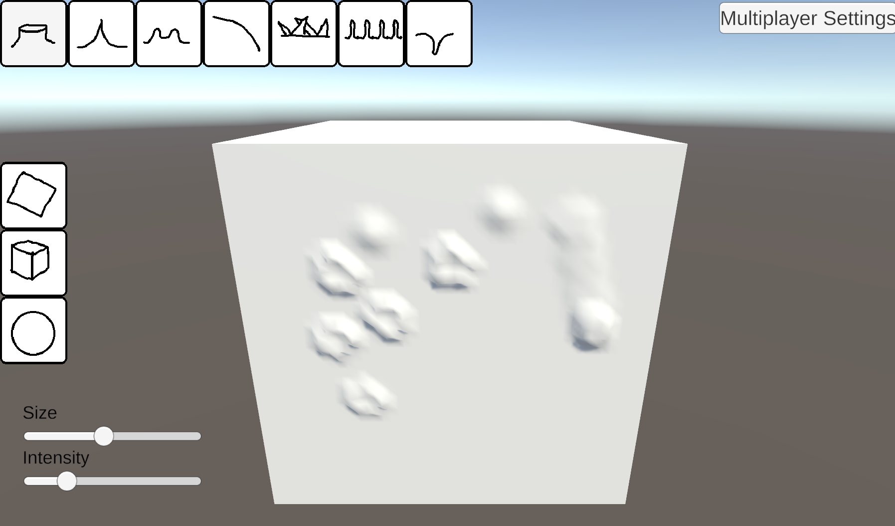

Purpose
This is a tool made for a 3d Graphics Class at University Of Washington Bothell. It was made by me and Aiden Kreeger. This tool recreates some mesh sculpting functionality of Blender and integrates it into a server client framework for online editing of a shared 3d mesh between two or more users.
Video Demo
This is a short demo video made by Aiden Kreeger, who made Mesh Edit Online with me.
My Role
My role on the project was to implement the sculpting tools. In order for me to do that I had to design an abstract tool interface in order to implement different tool functions as abstract methods. I also designed a tool request pipeline for sending specific tool requests between the client and server that minimizes data usage for more efficient data transfer.
Outcomes
The final project was a well functioning demo. For the purposes of a college course, we did not have time to fully develop features to make this into a commercial tool application with 3d model exports and other industry standard features, however we did make a good demo that shows the main features of such a product. As such our demo that we developed is a proof of concept that such a tool could exist.
 